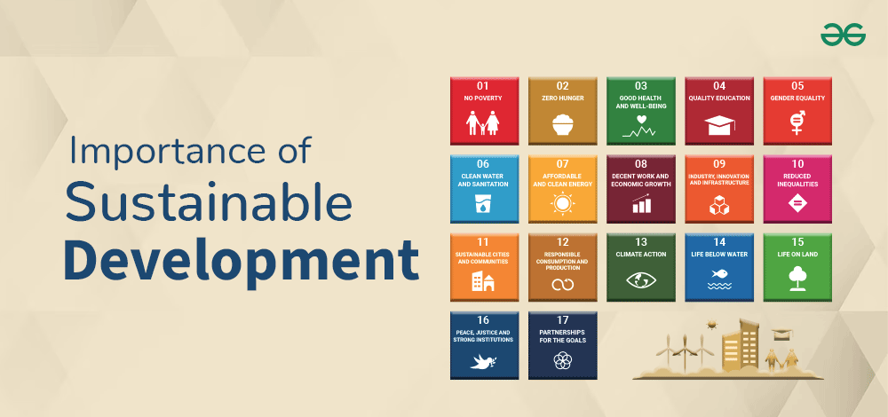
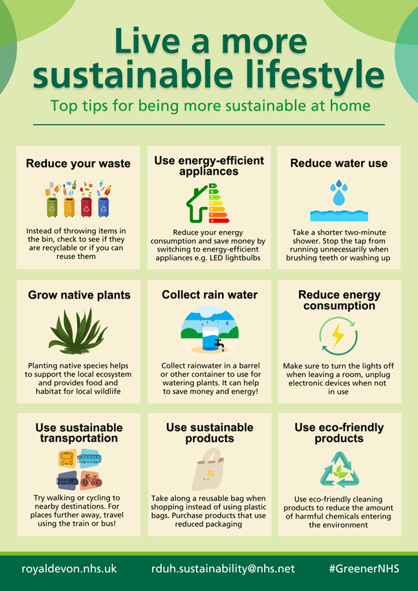

Introduction to Sustainable Living
Sustainable living refers to making choices that reduce an individual’s or community’s impact on the environment. The goal is to meet the needs of the present without compromising the ability of future generations to meet their own needs. Sustainable living involves adopting practices that conserve resources, protect ecosystems, and promote social equity. The importance of sustainability extends beyond environmental concerns. It also encompasses social, economic, and cultural aspects that shape our daily lives. From the food we eat, the energy we consume, to the waste we generate, sustainable living invites us to reflect on the long-term effects of our actions and the global consequences they may have.
Importance of Sustainability
Sustainability is more than just a buzzword – it’s a fundamental concept that underscores the well-being of our planet, its ecosystems, and future generations. The importance of sustainability lies in its ability to ensure a harmonious balance between human progress and environmental preservation. As the global population continues to grow, the challenges to sustaining life on Earth increase, making the practice of sustainability crucial to our survival and prosperity.
Sustainable Living Tips
Sustainable living is all about making choices that are better for the planet while maintaining a healthy, fulfilling lifestyle. Every small change we make in our daily routines can collectively have a positive impact on the environment. Below are some simple and effective tips that can help you reduce your ecological footprint and live more sustainably
Innovative Sustainable Practices
As the global community faces the challenges of climate change and environmental degradation, innovative sustainable practices are emerging across various industries and sectors. These practices not only reduce our ecological footprint but also provide new ways to meet human needs without depleting natural resources. As the global community faces the challenges of climate change and environmental degradation, innovative sustainable practices are emerging across various industries and sectors. These practices not only reduce our ecological footprint but also provide new ways to meet human needs without depleting natural resources.